Nanotechnology Engineering · University of Waterloo
I’m an engineering student at the University of Waterloo, studying nanotechnology and excited to get my iron ring in 2030!
I enjoy solving problems, learning fast, and figuring out how things work and why they sometimes don’t. I’m naturally curious, detail-oriented, and happiest when I’m building, analyzing, or improving something tangible. I bring a mix of technical thinking and practical common sense.
I’m comfortable working both independently and on teams where communication matters. I take my work seriously, but not myself. I believe good engineering comes from always questioning, staying adaptable, and accepting that the best solutions rarely work perfectly the first time.
Click any role to see the full details.
Waterloo Institute for Nanotechnology · Prof. Juewen Liu · Waterloo, ON
Studied aptamers (synthetic DNA sequences that bind specific chemicals) for use in biosensors.
Electrium · University of Waterloo · Waterloo, ON
Helped design and build a skateboard with built-in electronics on a student design team.
Superior Events Group · North York, ON
Ran setup, operation and safety for large event attractions.
Click any project to see the full write-up.
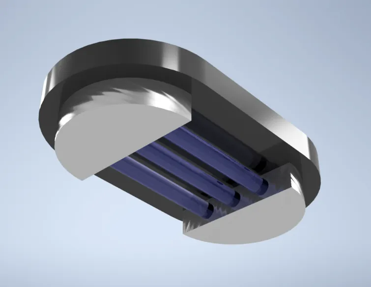
A compact device that sterilizes reusable dental tools on-site, cutting single-use plastic packaging.
Traditional dental instrument sterilization relies on single-use plastic packaging and off-site cleaning, generating significant waste and operational inefficiencies. This project explores a reusable, sealed sanitation system that integrates steam cleaning and UV-C disinfection to allow instruments to be safely cleaned on-site.
The final design combines steam cleaning with UV-C light disinfection inside a sealed aluminum enclosure. UV-C light (100–280 nm) disrupts DNA replication in microorganisms, while reflective aluminum improves sanitation efficiency.
This project demonstrates how sealed UV-C sanitation can reduce plastic waste while maintaining medical safety standards. The modular design supports scalability and broader healthcare use.
View full presentation (PDF)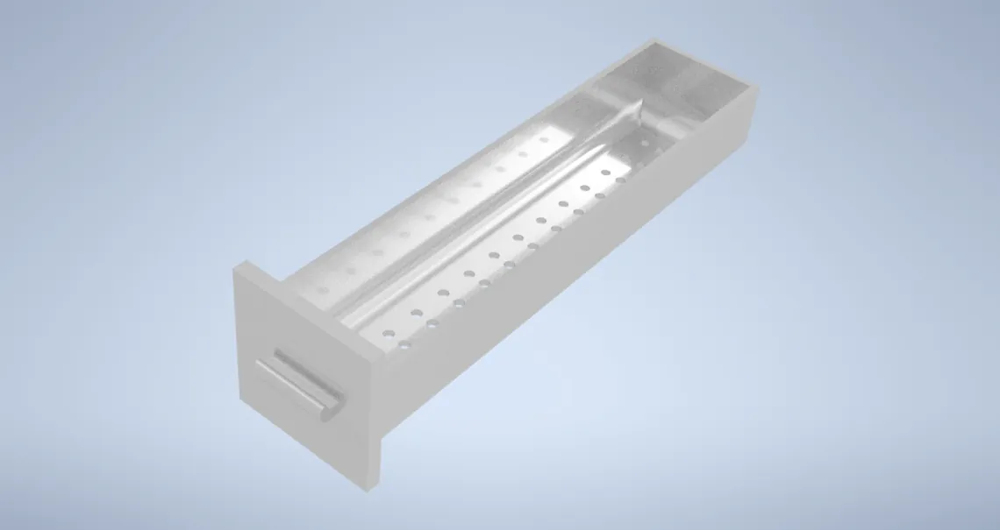
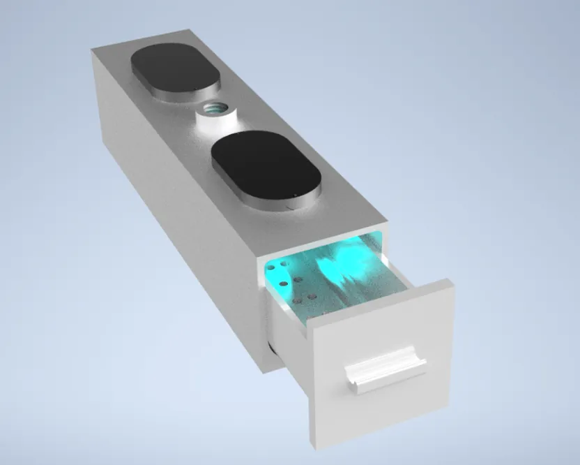
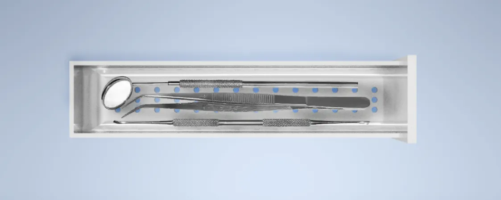
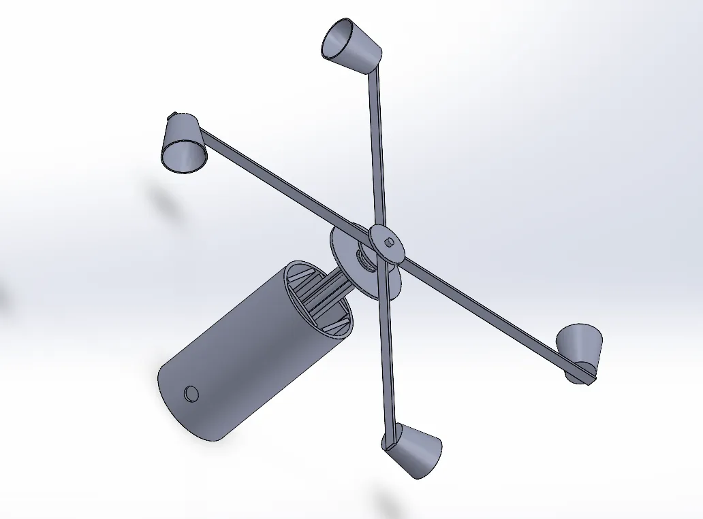
A triboelectric nanogenerator (TENG) that turns wind motion into electricity for off-grid use.
This project explores small-scale renewable energy generation through the triboelectric effect, converting ambient wind motion into usable electrical energy. The goal was to design a portable, off-grid power solution suitable for outdoor, emergency, and wilderness applications where conventional power sources are unavailable.
Many portable energy solutions rely on batteries or solar panels, which can be unreliable in shaded or remote environments. A wind-powered triboelectric nanogenerator offers a lightweight, mechanically simple alternative that harvests energy from everyday environmental motion.
The mechanical system was fully modeled and iterated in SolidWorks, with emphasis on component fit and alignment, efficient motion transfer under low wind speeds, and a compact, portable form factor. Multiple design iterations were tested to improve stability, durability, and electrical output.
The final design demonstrates the feasibility of wind-driven triboelectric energy harvesting for portable, off-grid applications. While optimized for low-power output, the system highlights the potential of TENG technology as a supplement to traditional renewable energy sources, particularly in environments where solar or battery solutions fall short.
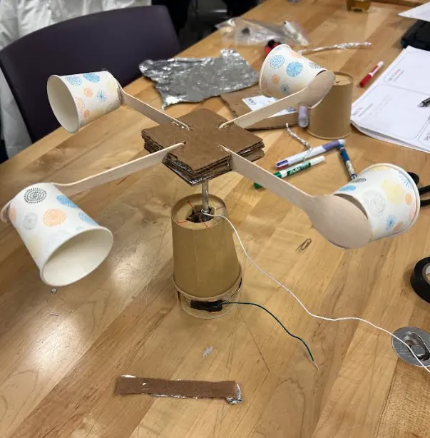
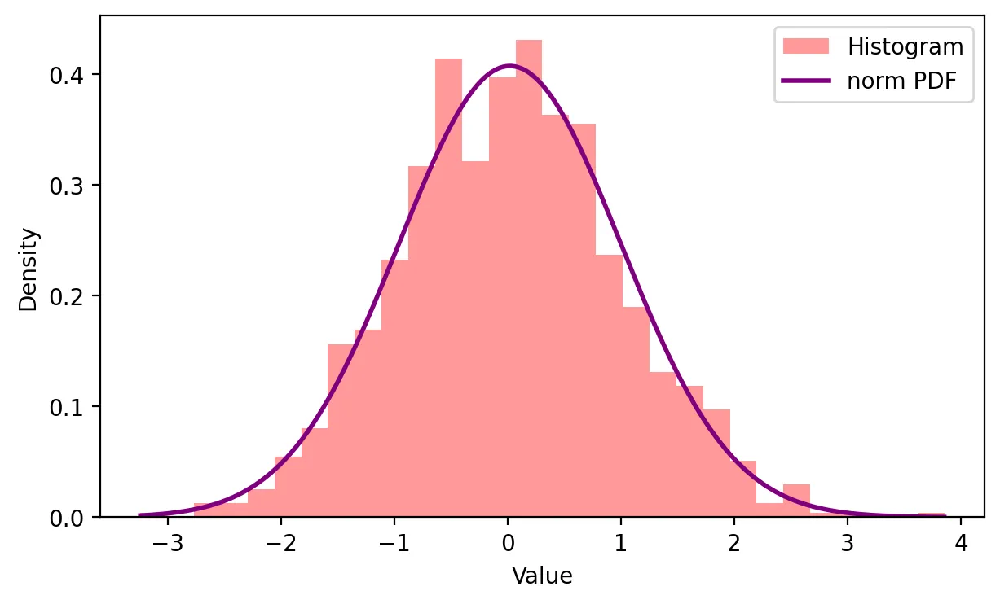
A live web app that fits probability distributions to real data and shows how good each fit is.
Sample data generated from an exponential distribution (λ = 1).
This project is a browser-based interactive application designed to help users explore how real-world datasets align with common probability distributions. Users can input data manually or upload CSV files, visualize normalized histograms, and fit multiple statistical distributions in real time.
In many introductory statistics and engineering courses, distribution fitting software outputs parameters, but users rarely understand how or why a particular distribution fits better than another. I wanted to build a tool that makes distribution fitting transparent, interactive, and exploratory, allowing users to visually and quantitatively see how parameter changes affect model quality and data interpretation.
The application models empirical data using continuous probability density functions. For a given distribution, parameters are estimated using maximum likelihood estimation (MLE), and the resulting probability density function is evaluated as:
General PDF:
f(x | θ) = probability density given parameters θ
Model Evaluation:
MSE = (1 / n) Σ (yᵢ − ŷᵢ)²
These metrics are computed over histogram bin centers to quantitatively assess the goodness of fit between empirical data and theoretical models.
Python, NumPy, pandas, SciPy, Matplotlib, Streamlit
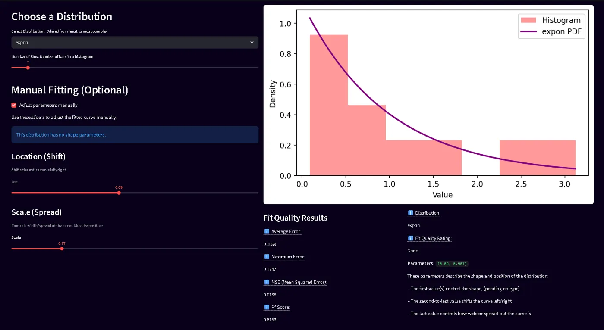
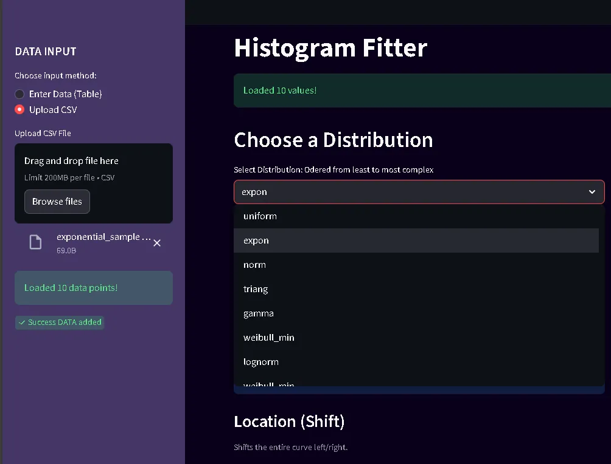
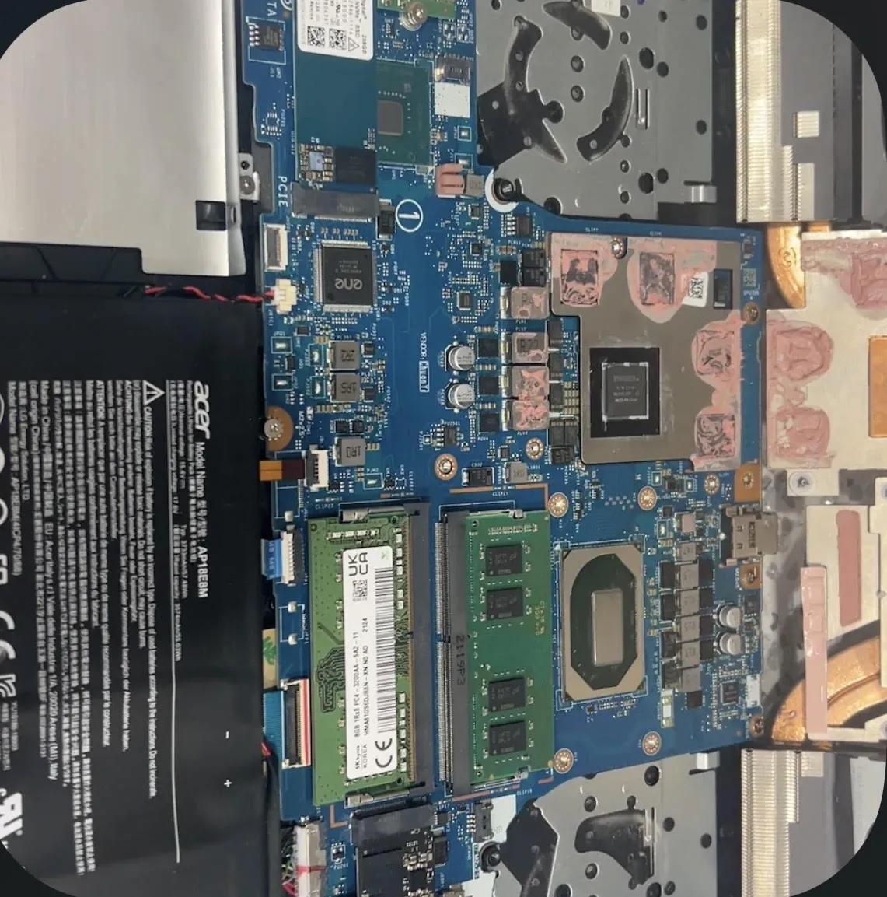
Designing, building and tuning desktops and laptops for friends, family and word-of-mouth clients.
My interest in computer hardware began with improving my own systems and quickly grew into helping friends and family get more performance out of the machines they already owned. Over time, this turned into regular consulting, upgrading, and building work through word-of-mouth referrals. I found that many performance issues weren’t caused by faulty hardware, but by bottlenecks, thermal limitations, or unbalanced component choices.
I upgraded and optimized existing desktops and laptops by replacing thermal paste, adding or upgrading RAM, installing SSDs, and resolving thermal throttling (reducing temperatures by up to 25%) or compatibility issues. These targeted improvements often extended system lifespan and delivered noticeable performance gains without requiring a full rebuild.
I designed and assembled complete desktop computer systems from scratch, handling every major component including the CPU, GPU, motherboard, RAM, power supply, storage, cooling, case, and airflow configuration.
Before any build, I evaluated how individual components would work together to avoid performance bottlenecks and unnecessary overspending, using PCPartPicker for compatibility checks and bottleneck analysis tools.
All systems were fully assembled and tested end-to-end, including cable management, airflow optimization, thermal testing, and BIOS configuration.
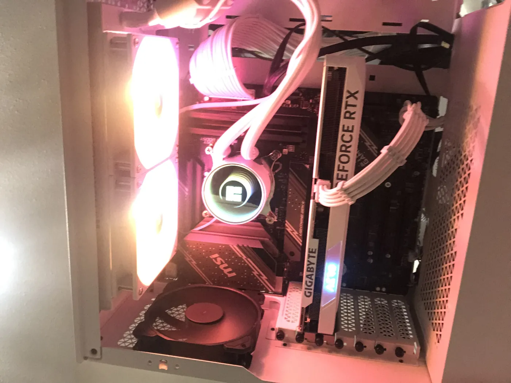
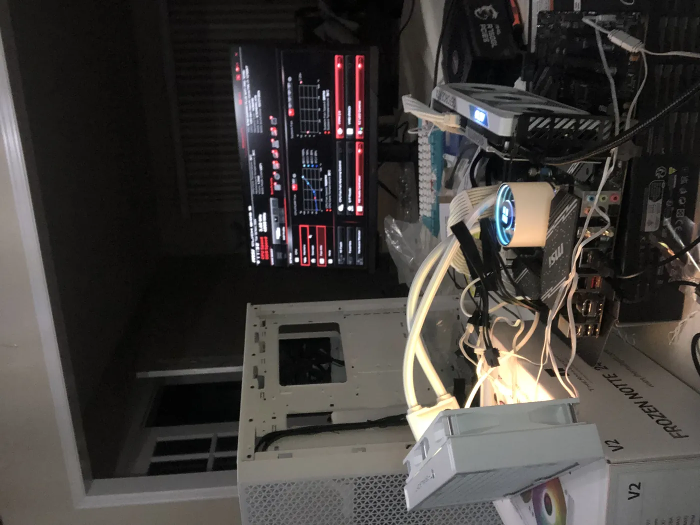
Feel free to reach out. Email is the fastest way to reach me.